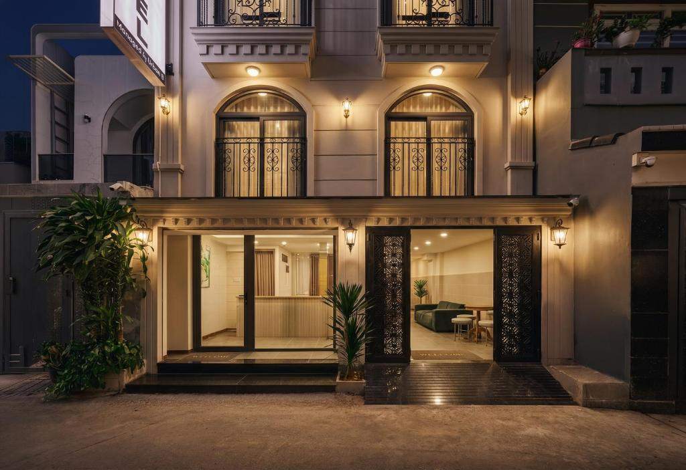
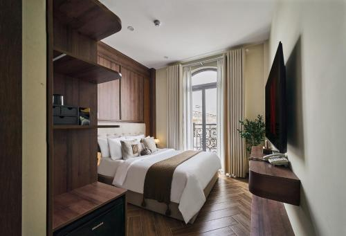
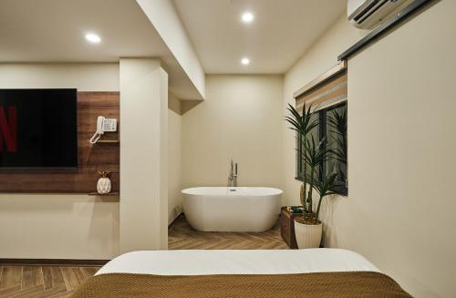
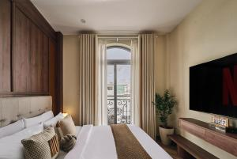
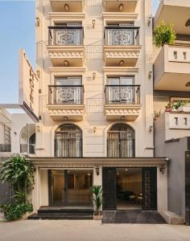
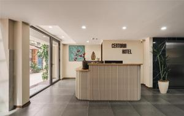

住宿筆記 · 來自 Obsidian · 2026-10-12 擷取
住宿｜Centoria Hotel By Urban B・✅ 已訂（Go Vap）

類型：酒店（Centoria Hotel By Urban B，3 星級飯店）
房型：雙人房｜冰箱、迷你吧、電熱水壺、書桌｜2 人
評分：Booking 9.5（優異）（24 則）｜員工素質 9.6、位置 9.2
價格：RM 326／4 晚（平均約 RM 82／晚）
入住／退房：入住 14:00 後｜退房 12:00 前
狀態：✅ 已訂（2026-10-26 → 10-30，4 晚・2 人）
📍 656/52 Đường Quang Trung, Gò Vấp, Hồ Chí Minh
🕐 入住 14:00 後｜退房 12:00 前
🛏️ 免費 WiFi、共用廚房、客房服務、冰箱、迷你吧、電熱水壺、淋浴、吹風機、書桌
🏢 3 星級飯店｜Go Vap 區（Gò Vấp）安靜住宅區，距第 1 區市中心約 6–7 km（Grab 20–25 分鐘）
- 評分優異 9.5：Booking 24 則評價平均 9.5（優異），屬高評價住宿
- 員工素質 9.6：服務分項接近滿分，接待評價極佳（住客 Mutlu：經理很親切、什麼都樂於幫忙）
- 位置 9.2：住客對位置評價不錯（以安靜住宅區而言）
- 價格實惠：RM 326／4 晚（平均約 RM 82／晚），CP 值高
- 環境安靜：位於 Go Vap 寧靜住宅區，適合想遠離市中心喧鬧、好好休息
- 設施齊全：免費 WiFi、共用廚房、客房服務、冰箱、迷你吧、電熱水壺、淋浴、吹風機、書桌
- 房間備品完善：迷你吧、冰箱、電熱水壺、書桌一應俱全
- 離市中心較遠：距第 1 區約 6–7 km，主要景點／美食區需搭 Grab 20–25 分鐘
- 評價樣本較少：僅 24 則評價，參考樣本偏少
- 非步行觀光圈：Go Vap 以住宅區為主，步行可達的觀光點有限
- 交通成本：每日往返市中心需計程車／Grab 車資與時間
> 來源：Booking.com（24 則評論中摘 6 條樣本）
- 「friendly staff」— Thy（澳大利亞）
- 「I like new and refreshing place, it comfortable and new」— Roma（喬治亞）
- 「Menajer çok güler yüzlü ve her şeye yardımcı oluyor」（經理很親切、什麼都樂於幫忙）— Mutlu（土耳其）
- 「Khách sạn này rất tốt phù hợp」— Bích（越南）
- 「Phòng sạch」（房間乾淨）— Như（越南）
- 「Khách sanh OK nha」— Diễm（越南）
Booking 頁面評語：「絕佳的位置——評分為 9.2/10！（分數來自 24 份評語）」
Centoria Hotel By Urban B 是天樂 已訂的胡志明住宿（2026-10-26 → 10-30，4 晚・2 人，RM 326）。3 星級飯店，Booking 9.5 優異（24 則），員工素質 9.6 尤其突出，房內冰箱、迷你吧、電熱水壺、書桌齊全，公共設施有免費 WiFi 與共用廚房，入住 14:00 後／退房 12:00 前。
需留意：位於 Go Vap 安靜住宅區，距第 1 區市中心約 6–7 km，進出市區需搭 Grab（20–25 分鐘），安排行程時建議把交通時間與車資算進去；評價樣本 24 則偏少，但現有分數相當亮眼。以 RM 326／4 晚的價格，換來安靜住宿品質與高服務評價，適合重視休息品質、不介意每日通勤市區的行程。
外觀
房間
浴室
房間
外觀
大廳
📸 實拍（共 6 張）




